|
|
| hard corals text index | photo index |
| Phylum Cnidaria > Class Anthozoa > Subclass Zoantharia/Hexacorallia > Order Scleractinia > Family Merulinidae |
| Meteor coral Cyphastrea sp. * Family Merulinidae updated Nov 2019 Where seen? These hard corals have tiny circular corallites that resemble tiny stars when the polyps are expanded. They are commonly seen on many of our Southern shores. Features: Colonies seen 15-30cm, sometimes much larger. The colony is generally a smooth boulder shape, sometimes forming smooth hillocks of different sizes, or small towers. The corallites have separate walls that are rather thick, forming a tiny circular ring (0.2cm or less) and are packed close to, but not squashed against one another. The result is a regular pattern of tiny rings. The surface between corallites often has tiny granular bumps. The polyps are tiny with many short tentacles, usually close to the colony surface, i.e., body column is not long. Colours seen include brown, yellow, orange and green. Monstastrea curta and Favia stelligera may appear similar. It's hard to distinguish them without close examination of small features and they are grouped here by large external features for convenience of display. |
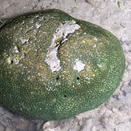 Sisters Island, Jan 12 |
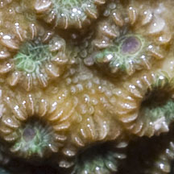 |
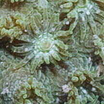 |
|
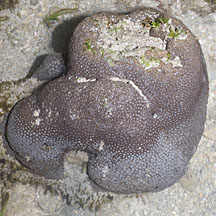 Cyrene Reef, Jul 11 |
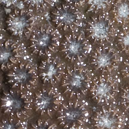 |
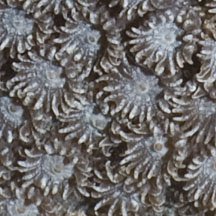 |
|
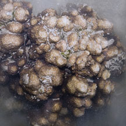 Sisters Island, Jan 12 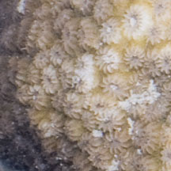 |
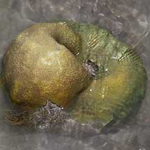 Labrador, Feb 06 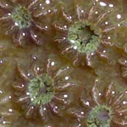 |
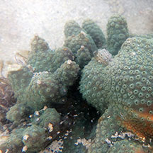 Terumbu Hantu, Apr 17 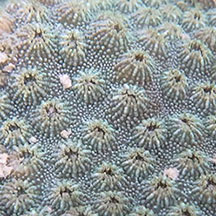 |
*Species are difficult to positively identify without close examination.
On this website, they are grouped by external features for convenience of display.
| Meteor corals on Singapore shores |
On wildsingapore
flickr
|
| Other sightings on Singapore shores |
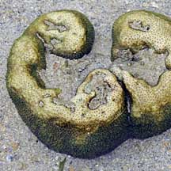 Terumbu Berkas, Jan 10 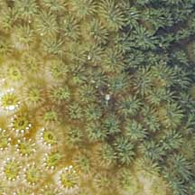 |
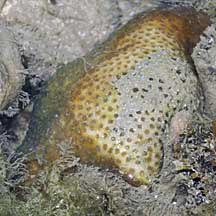 Terumbu Salu, Jan 10 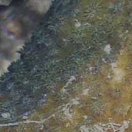 |
| Cyphastrea
species recorded for Singapore Danwei Huang, Karenne P. P. Tun, L. M Chou and Peter A. Todd. 30 Dec 2009. An inventory of zooxanthellate sclerectinian corals in Singapore including 33 new records **the species found on many shores in Danwei's paper. in red are those listed as threatened on the IUCN global list.
|
|
Links
References
|